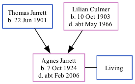

Agnes Kathleen L Fermor (née Jarrett) 1924 - c2006
[ Home ] | [ Calendar ] | [ Surnames Index ] | [ Family History ]The daughter of Thomas Jarrett (a farmer foreman) and Lilian Culmer (a farm worker fruit packing), Agnes Jarrett, the fourth cousin on the mother's side of <a href="I1.html">Nigel Horne</a>, was born in Faversham, Kent, England on Oct 7, 1924<span class="citation">1,2,3</span>. She married Stanley Fermor in Tonbridge, Kent, England around Aug 1946<span class="citation">4</span>. On Sep 29, 1939, she lived at Sherenden Farm in Tonbridge<span class="citation">1</span>. <p>She died <i>c.</i> Feb 2006 in Kent<span class="citation">3</span>.
Parents
- Thomas William Victor was born on Jun 22, 1901
- Lilian Agnes was born on Oct 10, 1903
Citations
- 1939 Register - Findmypast (was recorded at this address)
- England & Wales births 1837-2006 - Findmypast
- England & Wales deaths 1837-2007 - Findmypast
- England & Wales Marriages 1837-2005 - Findmypast
Media
England & Wales births 1837-2006 - BMD/B/1924/4/AZ/000656/142
England & Wales deaths 1837-2007 - BMD/D/2006/1/87074423
1939 Register - TNA/R39/1861/1861C/003/35
England & Wales marriages 1837-2005 - BMD/M/1946/3/AZ/000827/041
Family Tree
Generated by Ged2Site. Last updated on Jul 20, 2025